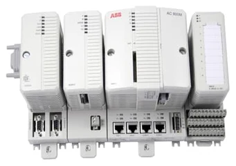
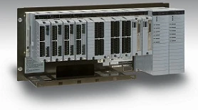
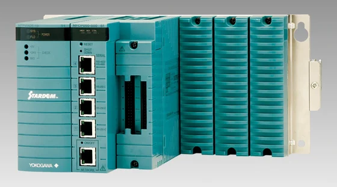
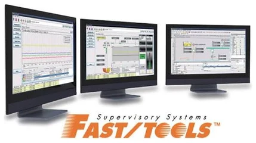
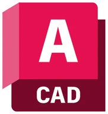

About Me
Controls Engineer with 5 years of experience delivering automation across offshore oil & gas, wastewater systems, and utility-scale solar sites. My work spans engineering, testing, strategic procurement, and stakeholder management across the full project lifecycle.
Proficient in control logic development, troubleshooting, stakeholder management, and conflict resolution between OEMs, TPCs, and internal teams to eliminate commissioning delays. Backed by an MBA in Energy Management from TU Berlin, I bridge hands-on engineering with commercial execution.
If you're looking for a controls engineer, . I'd love to discuss the opportunity and share how I can add value to your team.
Engineering Scope
-
Controls & SCADA
Developed 16-step remote well-opening sequence on offshore oil rigs for Qatar Energy.
-
Protocols & networks
Delivered 99.7% telemetry uptime: Modbus, DNP3 and OPC configuration and testing.
-
High-voltage & plant equipment
GBP 9M+ across 6 Tier-1 OEM contracts; suppliers cut from 9 to 6.
-
Root cause & reliability
38 quality exceptions closed via 5 Whys and Ishikawa; 93% first-pass rate across 14 FATs.
-
Software lifecycle
Migrated 45+ internal libraries from legacy ProControl P14 to ABB 800xA, MTBF up 43%.
-
Functional safety
Ex-d and IP65 panel ratings verified against FDS and factory FAT.
Systems & Industrial Platforms
-

CertifiedABB 800xA
DCS · Applied Operations
-
SAP Ariba
Procurement
-

Yokogawa CENTUM VP
DCS
-

STARDOM FCN
RTU
-

FAST/TOOLS
SCADA
-
Python
Modelling
-
Power BI
KPI reporting
-

AutoCAD
Drawings